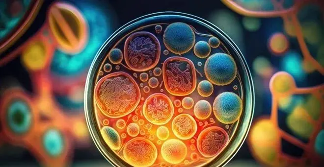
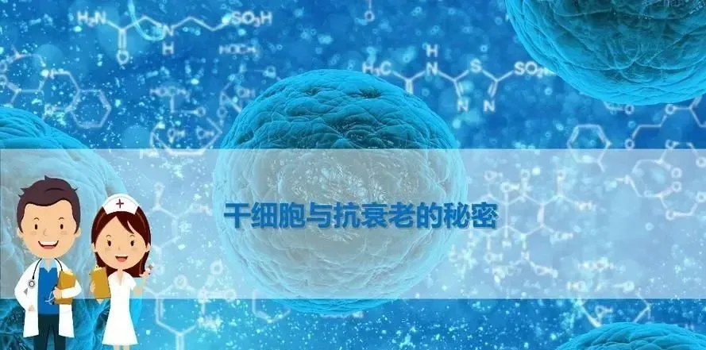

别等身体亮红灯！百年春自体干细胞，为您定制细胞级抗衰防线
2026-03-04

About Us
关于百年春
目前，全球注册在案的干细胞临床研究为6000多家，涉及的疾病有200多种。
近年来，随着相关的技术规范指南、专家共识或期刊文献的发表，人们对干细胞在抗衰老领域的潜力有了更深的认识。
爱惜生命，从细胞开始
补充再生干细胞是一种有效方法
2024年2月，《中华老年医学杂志》发布了《延缓衰老药物干预研究中国老年医学临床专家共识2024》，其中提到干细胞治疗被认为是一种补充再生细胞的有效方法，是一类科学延缓衰老的策略。
《老年医学与保健》杂志发布了老年性疾病的重要诱因。通过输注细胞或活性因子，有可能减轻衰老的危害，改善中老年人健康，是一类科学抗衰老的策略。
国务院办公厅印发了《关于发展银发经济增进老年人福祉的意见》，这是国家出台的首个支持银发经济发展的专门文件。
文件中，发展抗衰老产业及再生医学再次被点名，强调深化高精尖技术在抗衰老领域的研发应用，推动生物技术与延缓老年病深度融合，开发老年病早期筛查产品和服务。
其中再生医学是利用生命科学、工程学、计算机科学等多学科的理论和方法，融合材料科学、细胞技术、组织工程技术、基因工程技术等多项现代生物工程技术，从而实现修复、替代和增强人体内受损、病变或有缺陷的组织和器官的技术。
狭义的再生医学主要包括组织工程、再生材料、干细胞等领域。
人体衰老所表现的组织器官结构退行性病变和机能降低，其本质是细胞衰减，而细胞的衰减又主要由于干细胞衰减所致。
而干细胞是维持人体动态平衡的种子细胞，以干细胞为核心的再生医学的发展，大大促进了人类探索抗衰老的步伐。
同时，基于干细胞及其衍生物的技术，在衰老相关的疾病治疗领域展现出了巨大的临床应用前景，为解决衰老相关疾病的临床困境提供了新思路。
让衰老的进程慢下来
干细胞将改善4亿中老年人健康问题
根据国家统计局最新的数据预计：到2035年左右，60岁及以上老年人口将突破4亿，在总人口中的占比将超过30%，中国将进入重度老龄化阶段。
面对日渐紧迫的养老问题，在政府工作报告中罕见地16次提及了“养老”，并提出了一系列具体举措推动我国养老健康事业的发展。
提高老年人的生活质量，其中一个重要的方向就是减轻老年人的疾病困扰，控制那些伴随着年龄增长而加剧的疾病，最终让老人“老而不衰”。
鉴于干细胞的生物学特性，被认为能够改善与年龄相关的退行性疾病。所以，干细胞正逐渐被研究用于治疗各个系统的疾病，如老年痴呆、帕金森、骨髓衰竭、肌肉萎缩症、退行性骨关节炎、神经系统疾病、糖尿病、心血管疾病等。

近年来，科学家们正在尝试利用干细胞治疗衰老相关疾病和慢性病来延缓衰老的进程，通过干细胞提升机体抗自由基的能力，从整体上调控机体的功能状态，最终实现全身性、系统性和根本性的延年益寿。
干细胞技术的发展和应用，为研究人类衰老的生物学机制，探索衰老相关疾病的发病机理带来了曙光，也为人类干预衰老、预防和治疗衰老相关的疾病带来可能。

相信随着干细胞科技的发展，“虽然我们不能终止衰老的进程，但可以通过对慢性病等的管理和治疗，让衰老的进程慢下来”。